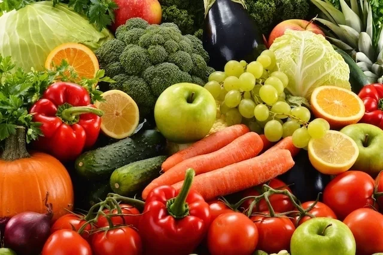

Uma dieta é tudo o que uma pessoa ingere, independentemente do objetivo:
perder ou ganhar peso, reduzir a ingestão de gorduras, evitar carboidratos ou se não houver qualquer objetivo. No entanto, o termo é muitas vezes usado para se referir ao objetivo de perder peso, o que se transformou numa obsessão para muitas pessoas.
As dietas saudáveis padrões para crianças e adultos são baseadas nas necessidades de pessoas comuns que apresentam certas características:
-Não precisam perder ou ganhar peso.
-Não precisam limitar componentes da dieta por causa de algum distúrbio, risco ou idade avançada.
-Gastam quantidades normais de energia por meio da prática de exercícios ou de outras atividades vigorosas.
Opções práticas e deliciosas de receitas para aumentar a ingestão de vitaminas e minerais.
EMAGRECIMENTO:
Aveia, Ovo, Berinjela, Brócolis, TomateAbobrinha, Arroz integral, Leguminosas,
Pepino, Pera, Grão de bico, Espinafre, Batata doce, Leite desnatado, Canela, Aveia,
Berinjela.
GANHO DE MASSA: frango, Batata doce, Ovo, Leite, Carne vermelha, Sopa, Lentilha, Feijão, Quinoa, Amaranto, Grão-de-bico, Salmão, Oleaginosas, Ervilha.
O que pode comer?
Os alimentos que devem ser priorizados para diminuir o peso em 2 semanas são:
